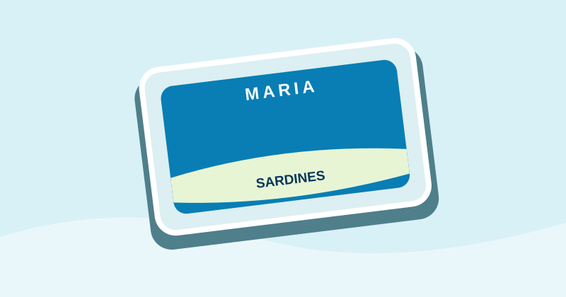
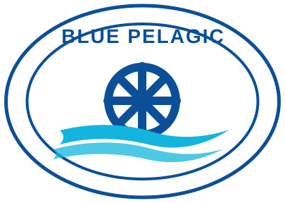
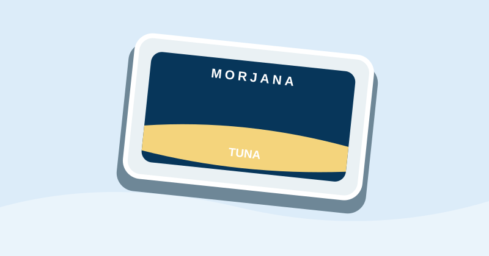
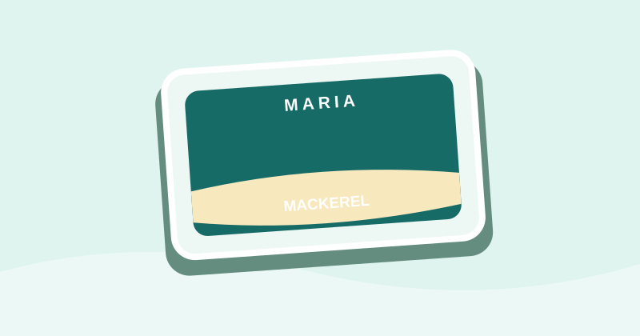
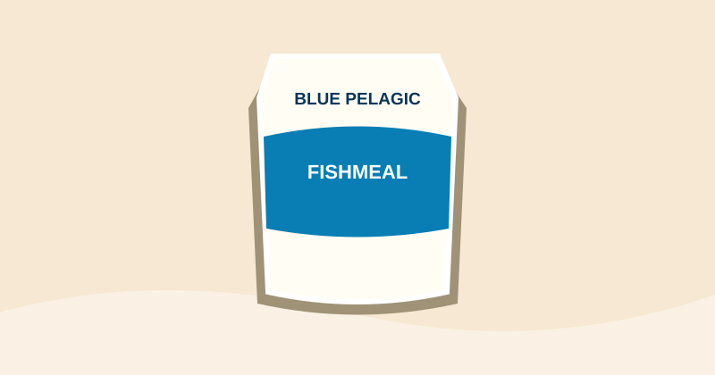

Sardines MARIA
Préparées et conditionnées pour nos clients et partenaires.
MARIA
BLUE PELAGIC sarlProduction et commercialisation de conserves de sardines, thon et maquereaux, ainsi que de farine de poisson.
Découvrir nos produitsMARIA et MORJANA — produits de la mer destinés aux marchés locaux et internationaux.

Préparées et conditionnées pour nos clients et partenaires.
MARIAUne gamme de sardines préparées et conditionnées avec soin.
MORJANA
Produits de la mer pour les marchés servis par BLUE PELAGIC.
Conserves
Produits de maquereaux en conserve.
Conserves
Production et commercialisation de farine de poisson.
Produit marinFondée en 2008, BLUE PELAGIC sarl est spécialisée dans la production et la commercialisation de produits de la mer en conserve. L’entreprise fabrique ses propres produits sous les marques MARIA et MORJANA et travaille également pour le compte d’autres sociétés.
Notre site de production est situé dans la zone industrielle du Port de Laâyoune, au Maroc.
E-mail : sec.bpelagic@gmail.com
Adresse : Zone industrielle du Port de Laâyoune, Maroc
Pour toute demande d’information, de partenariat ou de collaboration commerciale, contactez-nous.